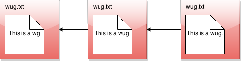
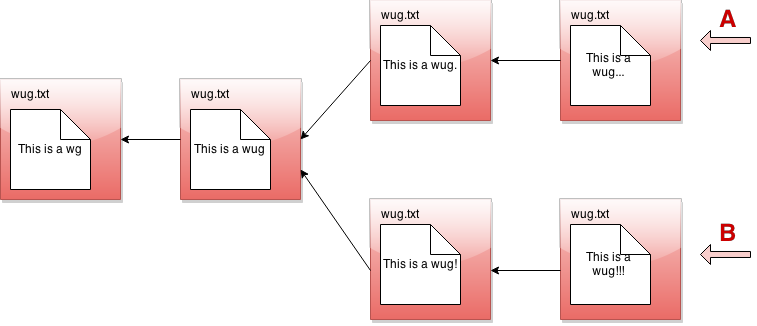
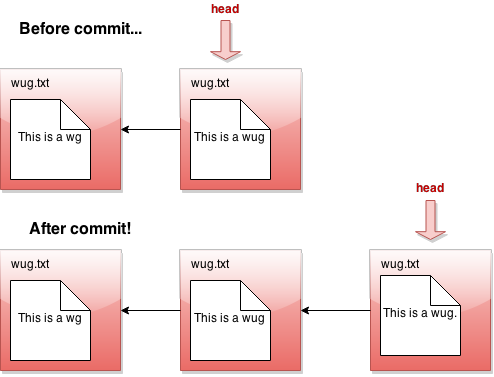
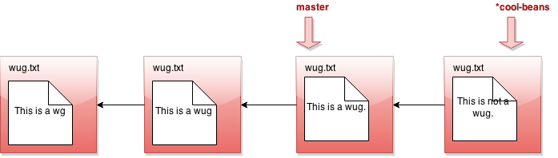
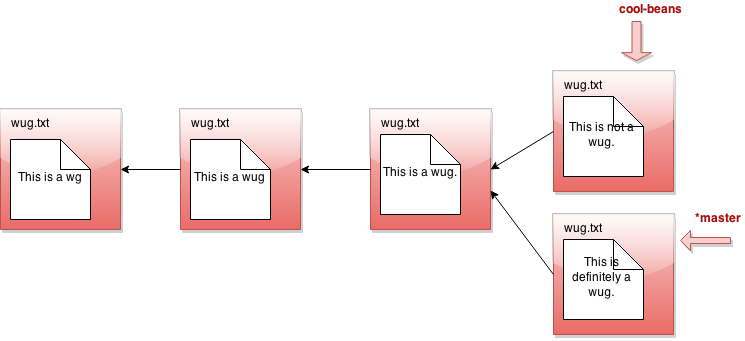
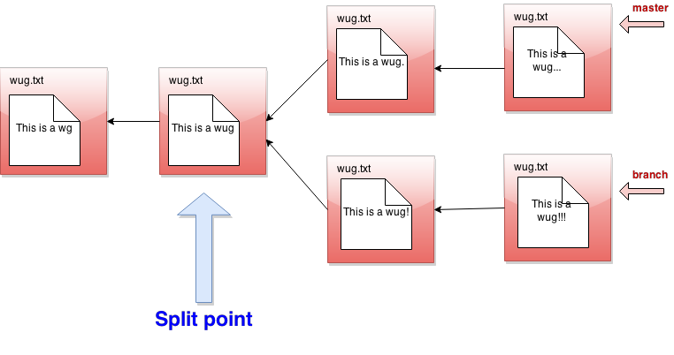
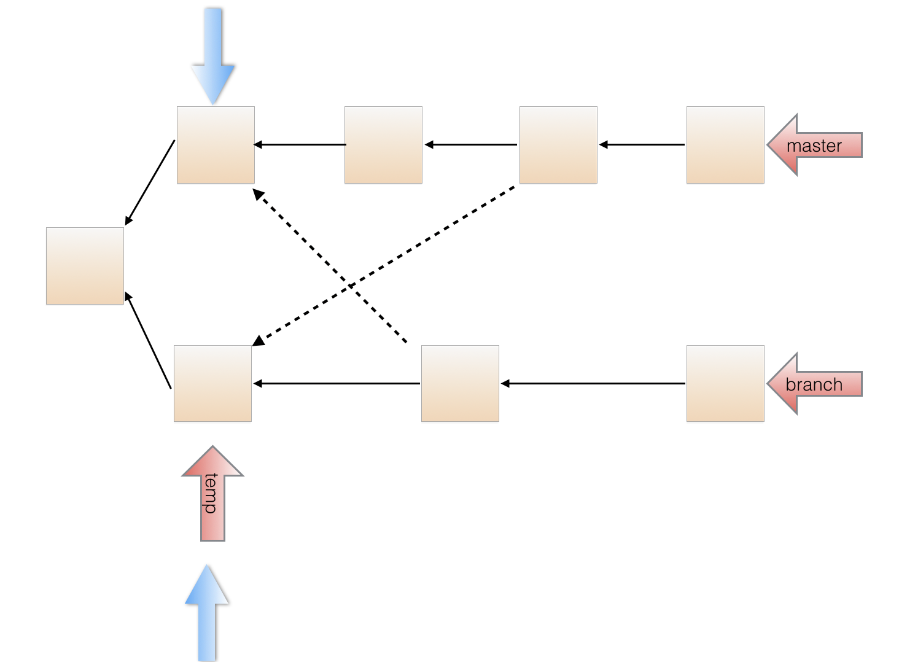

Due Monday, 4 May 2020
[Revisions to the project spec since its release are marked like this.]
A. Overview of Gitlet
In this project you'll be implementing a version-control system that mimics some of the basic features of the popular system Git. Ours is smaller and simpler, however, so we have named it Gitlet.
A version-control system is essentially a backup system for related collections of files. The main functionality that Gitlet supports is:
- Saving the contents of entire directories of files. In Gitlet, this is called committing, and the saved contents themselves are called commits.
- Restoring a version of one or more files or entire commits. In Gitlet, this is called checking out those files or that commit.
- Viewing the history of your backups. In Gitlet, you view this history in something called the log.
- Maintaining related sequences of commits, called branches.
- Merging changes made in one branch into another.
The point of a version-control system is to help you when creating complicated (or even not-so-complicated) projects, or when collaborating with others on a project. You save versions of the project periodically. If at some later point in time you accidentally mess up your code, then you can restore your source to a previously committed version (without losing any of the changes you made since then). If your collaborators make changes embodied in a commit, you can incorporate (merge) these changes into your own version.
In Gitlet, you don't just commit individual files at a time. Instead, you can commit a coherent set of files at the same time. We like to think of each commit as a snapshot of your entire project at one point in time. However, for simplicity, many of the examples in the remainder of this document involve changes to just one file at a time. Just keep in mind you could change multiple files in each commit.
In this project, it will be helpful for us to visualize the commits we make over time. Suppose we have a project consisting just of the file wug.txt, we add some text to it, and commit it. Then we modify the file and commit these changes. Then we modify the file again, and commit the changes again. Now we have saved three total versions of this file, each one later in time than the previous. We can visualize these commits like so:

Here we've drawn an arrow indicating that each commit contains some kind of reference to the commit that came before it. We call the commit that came before it the parent commit—this will be important later. But for now, does this drawing look familiar? That's right; it's a linked list!
The big idea behind Gitlet is that we can visualize the history of the different versions of our files in a list like this. Then it's easy for us to restore old versions of files. You can imagine making a command like: "Gitlet, please revert to the state of the files at commit #2", and it would go to the second node in the linked list and restore the copies of files found there, while removing any files that are in the first node, but not the second.
If we tell Gitlet to revert to an old commit, the front of the linked list will no longer reflect the current state of your files, which might be a little misleading. In order to fix this problem, we introduce something called the head pointer. The head pointer keeps track of where in the linked list we currently are. Normally, as we make commits, the head pointer will stay at the front of the linked list, indicating that the latest commit reflects the current state of the files:

However, let's say we revert to the state of the files at commit #2 (technically, this is the reset command, which you'll see later in the spec). We move the head pointer back to show this:

All right, now, if this were all Gitlet could do, it would be a pretty simple system. But Gitlet has one more trick up its sleeve: it doesn't just maintain older and newer versions of files, it can maintain differing versions. Imagine you're coding a project, and you have two ideas about how to proceed: let's call one Plan A, and the other Plan B. Gitlet allows you to save both versions, and switch between them at will. Here's what this might look like, in our pictures:

It's not really a linked list anymore. It's more like a tree. We'll call this thing the commit tree. Keeping with this metaphor, each of the separate versions is called a branch of the tree. You can develop each version separately:

There are two pointers into the tree, representing the furthest point of each branch. At any given time, only one of these is the currently active pointer, and this is what's called the head pointer. The head pointer is the pointer at the front of the current branch.
That's it for our brief overview of the Gitlet system! Don't worry if you don't fully understand it yet; the section above was just to give you a high level picture of what its meant to do. A detailed spec of what you're supposed to do for this project follows this section.
But a last word here: commit trees are immutable: once a commit node has been created, it can never be destroyed (or changed at all). We can only add new things to the commit tree, not modify existing things. This is an important feature of Gitlet! One of Gitlet's goals is to allow us to save things so we don't delete them accidentally.
B. Internal Structures
Real Git distinguishes several different kinds of objects. For our purposes, the important ones are
- blobs: Essentially the contents of files.
- trees: Directory structures mapping names to references to blobs and other trees (subdirectories).
- commits: Combinations of log messages,
other metadata (commit date, author,
etc.), a reference to a tree, and references to
parent commits.
The repository also maintains a mapping from branch heads (in this course,
we've used names
like
master,proj2, etc.) to references to commits, so that certain important commits have symbolic names.
We will simplify from Git still further by
- Incorporating trees into commits and not dealing with subdirectories (so there will be one "flat" directory of plain files for each repository).
- Limiting ourselves to merges that reference two parents (in real Git, there can be any number of parents.)
- Having our metadata consist only of a timestamp and log message. A commit, therefore, will consist of a log message, timestamp, a mapping of file names to blob references, a parent reference, and (for merges) a second parent reference.
Every object—every blob and every commit in our case—has a unique integer id that serves as a reference to the object. An interesting feature of Git is that these ids are universal: unlike a typical Java implementation, two objects with exactly the same content will have the same id on all systems. In the case of blobs, "same content" means the same file contents. In the case of commits, it means the same metadata, the same mapping of names to references, and the same parent reference. The objects in a repository are thus said to be content addressable.
Both Git and Gitlet accomplish this the same way: by using a cryptographic hash function called SHA-1 (Secure Hash 1), which produces a 160-bit integer hash from any sequence of bytes. Cryptographic hash functions have the property that it is extremely difficult to find two different byte streams with the same hash value (or indeed to find any byte stream given just its hash value), so that essentially, we may assume that the probability that any two objects with different contents have the same SHA-1 hash value is 2-160 or about 10-48. Basically, we simply ignore the possibility of a hashing collision, so that the system has, in principle, a fundamental bug that in practice never occurs!
Fortunately, there are library classes for computing SHA-1 values, so you won't have to deal with the actual algorithm. All you have to do is to make sure that you correctly label all your objects. In particular, this involves
- Including all metadata and references when hashing a commit.
- Distinguishing somehow between hashes for commits and hashes for blobs. A good way to do so is to hash in an extra word for each object that has one value for blobs and another for commits.
By the way, the SHA-1 hash value, rendered as a 40-character
hexadecimal string, makes
a convenient file name for storing your data in your .gitlet
directory (more on that below). It also gives you a convenient way to
compare two files (blobs) to see if they have the same contents: if their
SHA-1s are the same, we simply assume the files are the same.
For remotes (like origin and shared, which we've been using all semester),
we'll simply use other Gitlet repositories. Pushing simply means copying all
commits and blobs that the remote repository does not yet have to the remote
repository, and resetting a branch reference. Pulling is the same, but in the
other direction
Reading and writing your internal objects from and to files is actually pretty
easy, thanks to Java's serialization facilities. The interface
java.io.Serializable has no methods,
but if a class implements it, then the Java
runtime will automatically provide a way to convert to and from a stream of
bytes, which you can then write to a file using the I/O class
java.io.ObjectOutputStream and read back (and deserialize) with
java.io.ObjectInputStream.
The term "serialization" refers to the conversion from some arbitrary structure
(array, tree, graph, etc.) to a serial sequence of bytes.
Here is a summary example of the structures discussed in this section.
As you can see, each commit (rectangle) points to some blobs (circles), which
contain file contents. The commits contain the file names and references to
these blobs, as well as a parent link. These references, depicted as arrows,
are represented in the .gitlet directory using their SHA-1 hash values (the
small hexadecimal numerals above the commits and below the blobs). The newer
commit contains an updated version of wug1.txt, but shares the same version
of wug2.txt as the older commit.

C. Detailed Spec of Behavior
Overall Spec
The only structure requirement we're giving you is that you have a
class named gitlet.Main and that it has a main method. Here's your skeleton
code for this project (in package Gitlet):
public class Main {
public static void main(String[] args) {
// FILL IN
}
}We are also giving you some utility methods for performing a number of mostly file-system-related tasks, so that you can concentrate on the logic of the project rather than the peculiarities of dealing with the OS.
You may, of course, write additional Java classes to support your project—in fact, please do. But don't use any external code (aside from JUnit), and don't use any programming language other than Java. You can use all of the Java Standard Library that you wish, plus utilities we provide.
The majority of this spec will describe how Gitlet.java's main
method must react when it receives various gitlet commands as
command-line arguments. But before we break down command-by-command,
here are some overall guidelines the whole project should
satisfy:
- In order for Gitlet to work, it will need a place to store old
copies of files and other
metadata. All of this stuff must be stored in a directory called
.gitlet, just as this information is stored in directory.gitfor the real git system (files with a.in front are hidden files. You will not be able to see them by default on most operating systems. On Unix, the commandls -awill show them.) A Gitlet system is considered "initialized" in a particular location if it has a.gitletdirectory there. Most Gitlet commands (except for theinitcommand) only need to work when used from a directory where a Gitlet system has been initialized—i.e. a directory that has a.gitletdirectory. The files that aren't in your.gitletdirectory (which are copies of files from the repository that you are using and editing, as well as files you plan to add to the repository) are referred to as the files in your working directory. - Most commands have runtime or memory usage requirements. You must follow these. Some of the runtimes are described as constant "relative to any significant measure". The significant measures are: any measure of number or size of files, any measure of number of commits. You can ignore time required to serialize or deserialize, with the one caveat that your serialization time cannot depend in any way on the total size of files that have been added, committed, etc (what is serialization? You'll see later in the spec). You can also pretend that getting from a hash table is constant time.
- Some commands have failure cases with a specified error message. The exact formats of these are specified later in the spec. All error message end with a period; since our autograding is literal, be sure to include it. If your program ever encounters one of these failure cases, it must print the error message and not change anything else. You don't need to handle any other error cases except the ones listed as failure cases.
There are some failure cases you need to handle that don't apply to a particular command. Here they are:
- If a user doesn't input any arguments, print the message
Please enter a command.and exit. - If a user inputs a command that doesn't exist, print the
message
No command with that name exists.and exit. - If a user inputs a command with the wrong number or format of
operands, print the message
Incorrect operands.and exit. - If a user inputs a command that requires being in an initialized
Gitlet working directory (i.e., one containing a
.gitletsubdirectory), but is not in such a directory, print the messageNot in an initialized Gitlet directory.
- If a user doesn't input any arguments, print the message
- Some of the commands have their differences from real Git listed. The spec is not exhaustive in listing all differences from git, but it does list some of the bigger or potentially confusing and misleading ones.
- Do NOT print out anything except for what the spec says. Some of our autograder tests will break if you print anything more than necessary.
- Always exit with exit code 0, even in the presence of errors. This allows us to use other exit codes as an indication that something blew up.
- The spec classifies some commands as "dangerous". Dangerous commands are ones that potentially overwrite files (that aren't just metadata)—for example, if a user tells Gitlet to restore files to older versions, Gitlet may overwrite the current versions of the files. Just FYI.
D. The Commands
init
- Usage:
java gitlet.Main init - Description: Creates a new Gitlet version-control system in the
current directory. This system will automatically start with one
commit: a commit that contains no files and has the commit message
initial commit(just like that, with no punctuation). It will have a single branch:master, which initially points to this initial commit, andmasterwill be the current branch. The timestamp for this initial commit will be 00:00:00 UTC, Thursday, 1 January 1970 in whatever format you choose for dates (this is called "The (Unix) Epoch", represented internally by the time 0.) Since the initial commit in all repositories created by Gitlet will have exactly the same content, it follows that all repositories will automatically share this commit (they will all have the same UID) and all commits in all repositories will trace back to it. - Runtime: Should be constant relative to any significant measure.
- Failure cases: If there is already a Gitlet version-control
system in the current directory, it should abort. It should NOT
overwrite the existing system with a new one. Should print the error
message
A Gitlet version-control system already exists in the current directory. - Dangerous?: No
- Our line count: ~25
add
- Usage:
java gitlet.Main add [file name] - Description: Adds a copy of the file as it currently exists to
the staging area (see the description of the
commitcommand). For this reason, adding a file is also called staging the file for addition. Staging an already-staged file overwrites the previous entry in the staging area with the new contents. The staging area should be somewhere in.gitlet. If the current working version of the file is identical to the version in the current commit, do not stage it to be added, and remove it from the staging area if it is already there (as can happen when a file is changed, added, and then changed back). The file will no longer be staged for removal (seegitlet rm), if it was at the time of the command. - Runtime: In the worst case, should run in linear time relative to the size of the file being added and $\lg N$, for $N$ the number of files in the commit.
- Failure cases: If the file does not exist, print the error
message
File does not exist.and exit without changing anything. - Dangerous?: No
- Our line count: ~20
commit
- Usage:
java gitlet.Main commit [message] Description: Saves a snapshot of certain files in the current commit and staging area so they can be restored at a later time, creating a new commit. The commit is said to be tracking the saved files. By default, each commit's snapshot of files will be exactly the same as its parent commit's snapshot of files; it will keep versions of files exactly as they are, and not update them. A commit will only update the contents of files it is tracking that have been staged for addition at the time of commit, in which case the commit will now include the version of the file that was staged instead of the version it got from its parent. A commit will save and start tracking any files that were staged for addition but weren't tracked by its parent. Finally, files tracked in the current commit may be untracked in the new commit as a result being staged for removal by the
rmcommand (below).The bottom line: By default a commit is the same as its parent. Files staged for addition and removal are the updates to the commit.
Some additional points about commit:
- The staging area is cleared after a commit.
- The commit command never adds, changes, or removes files in the
working directory (other than those in the
.gitletdirectory). Thermcommand will remove such files, as well as staging them for removal, so that they will be untracked after acommit. - Any changes made to files after staging for addition or removal
are ignored by the
commitcommand, which only modifies the contents of the.gitletdirectory. For example, if you remove a tracked file using the Unixrmcommand (rather than Gitlet's command of the same name), it has no effect on the next commit, which will still contain the deleted version of the file. - After the commit command, the new commit is added as a new node in the commit tree.
- The commit just made becomes the "current commit", and the head pointer now points to it. The previous head commit is this commit's parent commit.
- Each commit should contain the date and time it was made.
- Each commit has a log message associated with it that describes the
changes to the files in the commit. This is specified by the
user. The entire message should take up only one entry in
the array
argsthat is passed tomain. To include multiword messages, you'll have to surround them in quotes. - Each commit is identified by its SHA-1 id, which must include the file (blob) references of its files, parent reference, log message, and commit time.
- Runtime: Runtime should be constant with respect to any measure
of number of commits. Runtime must be no worse than linear with
respect to the total size of files the commit is tracking.
Additionally, this command has a memory requirement: Committing must
increase the size of the
.gitletdirectory by no more than the total size of the files staged for addition at the time of commit, not including additional metadata. This means don't store redundant copies of versions of files that a commit receives from its parent. You are allowed to save whole additional copies of files; don't worry about only saving diffs, or anything like that. - Failure cases: If no files have been staged, abort. Print the message
No changes added to the commit.Every commit must have a non-blank message. If it doesn't, print the error messagePlease enter a commit message.It is not a failure for tracked files to be missing from the working directory or changed in the working directory. Just ignore everything outside the.gitletdirectory entirely. - Dangerous?: No
- Differences from real git: In real git, commits may have multiple parents (due to merging) and also have considerably more metadata.
- Our line count: ~35
Here's a picture of before-and-after commit:

rm
- Usage:
java gitlet.Main rm [file name] - Description: Unstage the file if it is currently staged for addition. If the file is tracked in the current commit, stage it for removal and remove the file from the working directory if the user has not already done so (do not remove it unless it is tracked in the current commit).
- Runtime: Should run in constant time relative to any significant measure.
- Failure cases: If the file is neither staged nor tracked by the
head commit, print the error message
No reason to remove the file. - Dangerous?: Yes (although if you use our utility methods, you will only hurt your repository files, and not all the other files in your directory.)
- Our line count: ~20
log
- Usage:
java gitlet.Main log Description: Starting at the current head commit, display information about each commit backwards along the commit tree until the initial commit, following the first parent commit links, ignoring any second parents found in merge commits. (In regular Git, this is what you get with
git log --first-parent). This set of commit nodes is called the commit's history. For every node in this history, the information it should display is the commit id, the time the commit was made, and the commit message. Here is an example of the exact format it should follow:=== commit a0da1ea5a15ab613bf9961fd86f010cf74c7ee48 Date: Thu Nov 9 20:00:05 2017 -0800 A commit message. === commit 3e8bf1d794ca2e9ef8a4007275acf3751c7170ff Date: Thu Nov 9 17:01:33 2017 -0800 Another commit message. === commit e881c9575d180a215d1a636545b8fd9abfb1d2bb Date: Wed Dec 31 16:00:00 1969 -0800 initial commitThere is a
===before each commit and an empty line after it. As in real Git, each entry displays the unique SHA-1 id of the commit object. The timestamps displayed in the commits reflect the current timezone, not UTC; as a result, the timestamp for the initial commit does not read Thursday, January 1st, 1970, 00:00:00, but rather the equivalent Pacific Standard Time. Display commits with the most recent at the top. By the way, you'll find that the Java classesjava.util.Dateandjava.util.Formatterare useful for getting and formatting times. Look into them instead of trying to construct it manually yourself!For merge commits (those that have two parent commits), add a line just below the first, as in
=== commit 3e8bf1d794ca2e9ef8a4007275acf3751c7170ff Merge: 4975af1 2c1ead1 Date: Sat Nov 11 12:30:00 2017 -0800 Merged development into master.where the two hexadecimal numerals following "Merge:" consist of the first seven digits of the first and second parents' commit ids, in that order. The first parent is the branch you were on when you did the merge; the second is that of the merged-in branch. This is as in regular Git.
- Runtime: Should be linear with respect to the number of nodes in head's history.
- Failure cases: None
- Dangerous?: No
- Our line count: ~20
Here's a picture of the history of a particular commit. If the current branch's head pointer happened to be pointing to that commit, log would print out information about the circled commits:

The history ignores other branches and the future. Now that we have the concept of history, let's refine what we said earlier about the commit tree being immutable. It is immutable precisely in the sense that the history of a commit with a particular id may never change, ever. If you think of the commit tree as nothing more than a collection of histories, then what we're really saying is that each history is immutable.
global-log
- Usage:
java gitlet.Main global-log - Description: Like log, except displays information about all commits ever made. The order of the commits does not matter.
- Runtime: Linear with respect to the number of commits ever made.
- Failure cases: None
- Dangerous?: No
- Our line count: ~10
find
- Usage:
java gitlet.Main find [commit message] - Description: Prints out the ids of all commits that have the given
commit message, one per line.
If there are multiple such commits, it prints the
ids out on separate lines. The commit message is a single operand; to
indicate a multiword message, put the operand in quotation marks, as for
the
commitcommand below. - Runtime: Should be linear relative to the number of commits.
- Failure cases: If no such commit exists, prints the error
message
Found no commit with that message. - Dangerous?: No
- Differences from real git: Doesn't exist in real git. Similar effects can be achieved by grepping the output of log.
- Our line count: ~15
status
- Usage:
java gitlet.Main status Description: Displays what branches currently exist, and marks the current branch with a
*. Also displays what files have been staged for addition or removal. An example of the exact format it should follow is as follows.=== Branches === *master other-branch === Staged Files === wug.txt wug2.txt === Removed Files === goodbye.txt === Modifications Not Staged For Commit === junk.txt (deleted) wug3.txt (modified) === Untracked Files === random.stuffThere is an empty line between sections. Entries should be listed in lexicographic order, using the Java string-comparison order (the asterisk doesn't count). A file in the working directory is "modified but not staged" if it is
- Tracked in the current commit, changed in the working directory, but not staged; or
- Staged for addition, but with different contents than in the working directory; or
- Staged for addition, but deleted in the working directory; or
Not staged for removal, but tracked in the current commit and deleted from the working directory.
The final category ("Untracked Files") is for files present in the working directory but neither staged for addition nor tracked. This includes files that have been staged for removal, but then re-created without Gitlet's knowledge. Ignore any subdirectories that may have been introduced, since Gitlet does not deal with them.
The last two sections (modifications not staged and untracked files) are extra credit, worth 1 point. Feel free to leave them blank (leaving just the headers).
- Runtime: Make sure this depends only on the amount of data in the working directory plus the number of files staged to be added or deleted plus the number of branches.
- Failure cases: None
- Dangerous?: No
- Our line count: ~45
checkout
Checkout is a kind of general command that can do a few different things depending on what its arguments are. There are 3 possible use cases. In each section below, you'll see 3 bullet points. Each corresponds to the respective usage of checkout.
Usages:
java gitlet.Main checkout -- [file name]java gitlet.Main checkout [commit id] -- [file name]java gitlet.Main checkout [branch name]
Descriptions:
- Takes the version of the file as it exists in the head commit, the front of the current branch, and puts it in the working directory, overwriting the version of the file that's already there if there is one. The new version of the file is not staged.
- Takes the version of the file as it exists in the commit with the given id, and puts it in the working directory, overwriting the version of the file that's already there if there is one. The new version of the file is not staged.
- Takes all files in the commit at the head of the given branch, and puts them in the working directory, overwriting the versions of the files that are already there if they exist. Also, at the end of this command, the given branch will now be considered the current branch (HEAD). Any files that are tracked in the current branch but are not present in the checked-out branch are deleted. The staging area is cleared, unless the checked-out branch is the current branch (see Failure cases below).
Runtimes:
- Should be linear relative to the size of the file being checked out.
- Should be linear with respect to the total size of the files in the commit's snapshot. Should be constant with respect to any measure involving number of commits. Should be constant with respect to the number of branches.
Failure cases:
- If the file does not exist in the previous commit, abort,
printing the error message
File does not exist in that commit. - If no commit with the given id exists, print
No commit with that id exists.Otherwise, if the file does not exist in the given commit, print the same message as for failure case 1. - If no branch with that name exists, print
No such branch exists.If that branch is the current branch, printNo need to checkout the current branch.If a working file is untracked in the current branch and would be overwritten by the checkout, printThere is an untracked file in the way; delete it, or add and commit it first.and exit; perform this check before doing anything else.
- If the file does not exist in the previous commit, abort,
printing the error message
- Differences from real git: Real git does not clear the staging area and stages the file that is checked out. Also, it won't do a checkout that would overwrite or undo changes (additions or removals) that you have staged.
A [commit id] is, as described earlier, a hexadecimal numeral. A convenient feature of real Git is that one can abbreviate commits with a unique prefix. For example, one might abbreviate
a0da1ea5a15ab613bf9961fd86f010cf74c7ee48as
a0da1ein the (likely) event that no other object exists with a SHA-1 identifier that
starts with the same six digits. You should arrange for the same thing to
happen for commit ids that contain fewer than 40 characters. Unfortunately,
using shortened ids might slow down the finding of objects if implemented
naively (making the time to find a file linear in the number of objects), so
we won't worry about timing for commands that use shortened ids. We suggest,
however, that you poke around in a .git directory (specifically,
.git/objects) and see how it manages to speed up its search. You will perhaps
recognize a familiar data structure implemented with the file system rather
than pointers.
Only version 3 (checkout of a full branch) modifies the staging area: otherwise files scheduled for addition or removal remain so.
- Dangerous?: Yes!
Our line counts:
- ~15
- ~5
- ~15
branch
- Usage:
java gitlet.Main branch [branch name] - Description: Creates a new branch with the given name, and points it at the current head node. A branch is nothing more than a name for a reference (a SHA-1 identifier) to a commit node. This command does NOT immediately switch to the newly created branch (just as in real Git). Before you ever call branch, your code should be running with a default branch called "master".
- Runtime: Should be constant relative to any significant measure.
- Failure cases: If a branch with the given name already exists,
print the error message
A branch with that name already exists. - Dangerous?: No
- Our line count: ~10
All right, let's see what branch does in detail. Suppose our state looks like this:

Now we call java gitlet.Main branch cool-beans. Then we get this:

Hmm... nothing much happened. Let's switch to the branch with java
Gitlet checkout cool-beans:

Nothing much happened again?! Okay, say we make a commit now. Modify
some files, then java gitlet.Main add... then java gitlet.Main commit...

I was told there would be branching. But all I see is a straight line.
What's going on? Maybe I should go back to my other branch with java
Gitlet checkout master:

Now I make a commit...

Phew! So that's the whole idea of branching. Did you catch what's
going on? All that creating a branch does is to give us a new pointer. At any
given time, one of these pointers is considered the currently active
pointer, or the head pointer (indicated by *). We can switch the
currently active head pointer with checkout [branch name]. Whenever
we commit, it means we add a new commit in front of the currently
active head pointer, even if one is already there. This naturally
creates branching behavior.
Make sure that the behavior of your branch, checkout, and
commit match what we've described above. This is pretty core
functionality of Gitlet that many other commands will depend upon. If
any of this core functionality is broken, very many of our autograder
tests won't work!
rm-branch
- Usage:
java gitlet.Main rm-branch [branch name] - Description: Deletes the branch with the given name. This only means to delete the pointer associated with the branch; it does not mean to delete all commits that were created under the branch, or anything like that.
- Runtime: Should be constant relative to any significant measure.
- Failure cases: If a branch with the given name does not exist,
aborts. Print the error message
A branch with that name does not exist.If you try to remove the branch you're currently on, aborts, printing the error messageCannot remove the current branch. - Dangerous?: No
- Our line count: ~15
reset
- Usage:
java gitlet.Main reset [commit id] - Description: Checks out all the files tracked by the given
commit. Removes tracked files that are not present in that commit.
Also moves the current branch's head to that commit node.
See the intro for an example of what happens to the head pointer
after using reset. The
[commit id]may be abbreviated as forcheckout. The staging area is cleared. The command is essentiallycheckoutof an arbitrary commit that also changes the current branch head. - Runtime: Should be linear with respect to the total size of files tracked by the given commit's snapshot. Should be constant with respect to any measure involving number of commits.
- Failure case: If no commit with the given id exists, print
No commit with that id exists.If a working file is untracked in the current branch and would be overwritten by the reset, printThere is an untracked file in the way; delete it, or add and commit it first.and exit; perform this check before doing anything else. - Dangerous?: Yes!
- Differences from real git: This command is
closest to using the
--hardoption, as ingit reset --hard [commit hash]. - Our line count: ~10
merge
- Usage:
java gitlet.Main merge [branch name] Description: Merges files from the given branch into the current branch. This method is a bit complicated, so here's a more detailed description:
First consider what might be called the split point of the current branch and the given branch. For example, if
masteris the current branch andbranchis the given branch:  The split point is a latest common ancestor of the current and given branch heads:- A common ancestor is a commit to which there is a path (of 0 or more parent pointers) from both branch heads.
- A latest common ancestor is a common ancestor that is not an
ancestor of any other common ancestor.
For example, although the leftmost commit in the diagram above is a
common ancestor of
masterandbranch, it is also an ancestor of the commit immediately to its right, so it is not a latest common ancestor. If the split point is the same commit as the given branch, then we do nothing; the merge is complete, and the operation ends with the messageGiven branch is an ancestor of the current branch.If the split point is the current branch, then the effect is to check out the given branch, and the operation ends after printing the messageCurrent branch fast-forwarded.Otherwise, we continue with the steps below.
- Any files that have been modified in the given branch since the split point, but not modified in the current branch since the split point should be changed to their versions in the given branch (checked out from the commit at the front of the given branch). These files should then all be automatically staged. To clarify, if a file is "modified in the given branch since the split point" this means the version of the file as it exists in the commit at the front of the given branch has different content from the version of the file at the split point.
- Any files that have been modified in the current branch but not in the given branch since the split point should stay as they are.
- Any files that have been modified in both the current and given branch in the same way (i.e., both to files with the same content or both removed) are left unchanged by the merge. If a file is removed in both, but a file of that name is present in the working directory that file is not removed from the working directory (but it continues to be absent—not staged—in the merge).
- Any files that were not present at the split point and are present only in the current branch should remain as they are.
- Any files that were not present at the split point and are present only in the given branch should be checked out and staged.
- Any files present at the split point, unmodified in the current branch, and absent in the given branch should be removed (and untracked).
- Any files present at the split point, unmodified in the given branch, and absent in the current branch should remain absent.
Any files modified in different ways in the current and given branches are in conflict. "Modified in different ways" can mean that the contents of both are changed and different from other, or the contents of one are changed and the other file is deleted, or the file was absent at the split point and has different contents in the given and current branches. In this case, replace the contents of the conflicted file with
<<<<<<< HEAD contents of file in current branch ======= contents of file in given branch >>>>>>>(replacing "contents of..." with the indicated file's contents) and stage the result. Treat a deleted file in a branch as an empty file. Use straight concatenation here. In the case of a file with no newline at the end, you might well end up with something like this:
<<<<<<< HEAD contents of file in current branch======= contents of file in given branch>>>>>>>This is fine; people who produce non-standard, pathological files because they don't know the difference between a line terminator and a line separator deserve what they get.
- Once files have been updated according to the above, and the split
point was not the current branch or the given branch,
merge automatically commits with the log message
Merged [given branch name] into [current branch name].Then, if the merge encountered a conflict, print the messageEncountered a merge conflict.on the terminal (not the log). Merge commits differ from other commits: they record as parents both the head of the current branch (called the first parent) and the head of the branch given on the command line to be merged in. There is one complication in the definition of the split point. You may have noticed that we referred to "a", rather than "the" latest common ancestor. This is because there can be more than one in the case of "criss-cross merges", such as this:  Here, the solid lines are first parents and the dashed lines are the merged-in parents. Both the commits pointed by blue arrows above are latest common ancestors.
Here's how this was created: Branch splits from master in the left most commit. We make initial commits in branch and in master. We then create a new branch temp, splitting from branch. Then we merge master into branch, creating the second bottom commit from the right. This also moves the head of branch forward. We make another commit in master, and then merge temp into master. Then, we make another commit in master and branch. Now if we want to merge branch into master, we have two possible split points: the commits marked by the two blue arrows. You might want to think about why it can make a difference which gets used as the split point. We'll use the following rule to choose which of multiple possible split points to use:- Choose the candidate split point that is closest to the head of the current branch (that is, is reachable by following the fewest parent pointers along some path).
- If multiple candidates are at the same closest distance, choose any one of them as the split point. (We will make sure that this only happens in our test cases when the resulting merge commit is the same with any of the closest choices.)
By the way, we hope you've noticed that the set of commits has progressed from a simple sequence to a tree and now, finally, to a full directed acyclic graph.
- Runtime: $O(N\lg N + D)$, where $N$ is the total number of ancestor commits for the two branches and $D$ is the total amount of data in all the files under these commits.
- Failure cases: If there are staged additions or removals present,
print the error message
You have uncommitted changes.and exit. If a branch with the given name does not exist, print the error messageA branch with that name does not exist.If attempting to merge a branch with itself, print the error messageCannot merge a branch with itself.If merge would generate an error because the commit that it does has no changes in it, just let the normal commit error message for this go through. If an untracked file in the current commit would be overwritten or deleted by the merge, printThere is an untracked file in the way; delete it, or add and commit it first.and exit; perform this check before doing anything else. - Dangerous?: Yes!
Differences from real git: Real Git does a more subtle job of merging files, displaying conflicts only in places where both files have changed since the split point.
Real Git has a different way to decide which of multiple possible split points to use.
Real Git will force the user to resolve the merge conflicts before committing to complete the merge. Gitlet just commits the merge, conflicts and all, so that you must use a separate commit to resolve problems.
Real Git will complain if there are unstaged changes to a file that would be changed by a merge. You may do so as well if you want, but we will not test that case.
- Our line count: ~70
E. Miscellaneous Things to Know about the Project
Phew! That was a lot of commands to go over just now. But don't worry, not all commands are created equal. You can see for each command the approximate number of lines we took to do each part (that this only counts code specific to that command -- it doesn't double-count code reused in multiple commands). You shouldn't worry about matching our solution exactly, but hopefully it gives you an idea about the relative time consumed by each command. Merge is a lengthier command than the others, so don't leave it for the last minute!
This is an ambitious project, and it would not be surprising for you to feel lost as to where to begin. Therefore, feel free to collaborate with others a little more closely than usual, with the following caveats:
- Acknowledge all collaborators in comments near the beginning of your
gitlet/Main.javafile. - Don't share specific code; all collaborators must produce their own versions of the algorithms they come up with, so that we can see they differ.
By now this spec has given you enough information to get working on the project. But to help you out some more, there are a couple of things you should be aware of:
Dealing with Files
This project requires reading and writing of files. In order to do
these operations, you might find the classes java.io.File and
java.nio.file.Files helpful. Actually, you may find various things
in the java.io and java.nio packages helpful. Be sure to read the
gitlet.Utils package for other things we've written for you.
If you do a little
digging through all of these, you might find a couple of methods that will
make the io portion of this project much easier! One warning: If
you find yourself using readers, writers, scanners, or streams,
you're making things more complicated than need be.
Serialization Details
If you think about Gitlet, you'll notice that you can only run one
command every time you run the program. In order to successfully
complete your version-control system, you'll need to remember the
commit tree across commands. This means you'll have to design not just a
set of classes to represent internal Gitlet structures during execution,
but you'll need a parallel representation as files within your .gitlet
directories, which will carry across multiple runs of your program.
As indicated earlier, the convenient way to do this is to serialize
the runtime objects that you will need to store permanently in files.
In Java, this simply involves implementing
the java.io.Serializable interface:
import java.io.Serializable;
class MyObject implements Serializable {
...
}This interface has no methods; it simply marks its subtypes for the benefit of some special Java classes for performing I/O on objects. For example,
import java.io.File;
import java.io.FileOutputStream;
import java.io.IOException;
import java.io.ObjectOutputStream;
...
MyObject obj = ....;
File outFile = new File(someFileName);
try {
ObjectOutputStream out =
new ObjectOutputStream(new FileOutputStream(outFile));
out.writeObject(obj);
out.close();
} catch (IOException excp) {
...
}will convert obj to a stream of bytes and store it in the file whose
name is stored in someFileName. The object may then be reconstructed with
a code sequence such as
import java.io.File;
import java.io.FileInputStream;
import java.io.IOException;
import java.io.ObjectInputStream;
...
MyObject obj;
File inFile = new File(someFileName);
try {
ObjectInputStream inp =
new ObjectInputStream(new FileInputStream(inFile));
obj = (MyObject) inp.readObject();
inp.close();
} catch (IOException | ClassNotFoundException excp) {
...
obj = null;
}The Java runtime does all the work of figuring out what fields need to be converted to bytes and how to do so.
There is, however, one annoying subtlety to watch out for: Java serialization
follows pointers. That is, not only is the object you pass into writeObject
serialized and written, but any object it points to as well. If your internal
representation of commits, for example, represents the parent commits as
pointers to other commit objects, then writing the head of a branch will
write all the commits (and blobs) in the entire subgraph of commits
into one file, which is generally not what you want. To avoid this,
don't use Java pointers to
refer to commits and blobs in your runtime objects, but instead use
SHA-1 hash strings. Maintain a runtime map between these strings
and the runtime objects they refer to. You create and fill in this map
while Gitlet is running, but never read or write it to a file.
You might find it convenient to have (redundant) pointers commits as well as SHA-1 strings to avoid the bother and execution time required to look them up each time. You can store such pointers in your objects while still avoiding having them written out by declaring them "transient", as in
private transient MyCommitType parent1;Such fields will not be serialized, and when back in and deserialized, will be set to their default values (null for reference types). You must be careful when reading the objects that contain transient fields back in to set the transient fields to appropriate values.
Unfortunately, looking at the serialized files your program has produced with
a text editor (for debugging purposes) would be rather unrevealing;
the contents are encoded in Java's
private serialization encoding. We have therefore provided a simple debugging
utility program you might find useful: gitlet.DumpObj. See the Javadoc
comment on gitlet/DumpObj.java for details.
F. Testing
As usual, testing is part of the project. Be sure to provide
your own integration tests for each of the commands, covering all the specified
functionality. Also add unit tests to UnitTest.java or other testing classes
it invokes in its main method.
We have provided a testing program that makes it relatively easy to write
integration tests: testing/tester.py. As for Project #2, this interprets
testing files with an .in extension.
Within the testing subdirectory, running the command
python3 tester.py --verbose FILE.in ...where FILE.in ... is a list of specific .in files you want to check, will
provide additional information, such as what your program is outputting.
The command
python3 tester.py --verbose --keep FILE.inwill, in addition, keep around the directory that tester.py produces so
that you can examine its files at the point the tester script detected an
error.
In effect, the tester implements a very simple domain-specific language (DSL) that contains commands to
- Set up or remove files from a testing directory;
- Run
java gitlet.Main; - Check the output of Gitlet against a specific output or a regular expression describing possible outputs;
Check the presence, absence, and contents of files. Running the command
python3 testing/tester.py
(with no operands, as shown)
will provide a message documenting this language.
We've provided some examples in the directory testing/samples. Don't
put your own tests in that subdirectory; the readers will not count those as your
tests. Put all your .in files immediately within the testing directory.
As usual, we will test your code on the the instructional machines, so do be sure it works there! You can tell us how "it works on my machine" until you are blue in the face; we heartlessly won't care about that.
We've added a few things to the makefile to adjust for differences in people's
setups. If your system's command for invoking Python 3 is simply python, you
can still use our makefile unchanged by using
make PYTHON=python checkYou can pass additional flags to tester.py with, for example,
make TESTER_FLAGS="--show=all --keep"G. Design Document and Checkpoint
Since you are not working from a substantial skeleton this time, we are asking that everybody submit a design document describing their implementation strategy. It is not graded, but we will insist on having it before helping you with bugs in your program. Here are some guidelines, as well as an example from the Enigma project.
There will be an initial checkpoint for the project, due April 27, 2020.
Submit it in your project 3 directory using the tag proj3a-n (where,
as usual, n is simply an integer.) The checkpoint autograder will check
that
- Your program compiles.
- You pass the sample tests from the skeleton:
testing/samples/*.in. These require you to implementinit,add,commit,checkout -- [file name],checkout [commit id] -- [file name], andlog.
In addition, it will comment on (but not score):
- Whether you pass style checks (it will ignore FIXME comments for now; we won't in the final submission.)
- Whether there are compiler warning messages.
- Whether you pass your own unit and integration tests (as run by
make check).
We will score these in your final submission.
H. Going Remote (Extra Credit)
This project is all about mimicking git's local features. These are useful because they allow you to backup your own files and maintain multiple versions of them. However, git's true power is really in its remote features, allowing collaboration with other people over the internet. The point is that both you and your friend could be collaborating on a single code base. If you make changes to the files, you can send them to your friend, and vice versa. And you'll both have access to a shared history of all the changes either of you have made.
To get extra credit, implement some basic remote commands:
namely add-remote, rm-remote, push, fetch, and pull
You will get 4 extra-credit points for completing them.
Don't attempt or plan for extra credit until you have completed the
rest of the project.
Depending on how flexibly you have designed the rest of the project, 4 extra-credit points may not be worth the amount of effort it takes to do this section. We're certainly not expecting everyone to do it. Our priority will be in helping students complete the main project; if you're doing the extra credit, we expect you to be able to stand on your own a little bit more than most students.
The Commands
A few notes about the remote commands:
- Execution time will not be graded. For your own edification, please don't do anything ridiculous, though.
- All the commands are significantly simplified from their git equivalents, so specific differences from git are usually not notated. Be aware they are there, however.
So now let's go over the commands:
add-remote
- Usage: `java gitlet.Main add-remote [remote name] [name of remote directory]/.gitlet
- Description: Saves the given login information under the given
remote name. Attempts to push or pull from the given remote name
will then attempt to use this
.gitletdirectory. By writing, e.g., java gitlet.Main add-remote other ../testing/otherdir/.gitlet you can provide tests of remotes that will work from all locations (on your home machine or within the grading program's software). Always use forward slashes in these commands. Have your program convert all the forward slashes into the path separator character (forward slash on Unix and backslash on Windows). Java helpfully defines the class variablejava.io.File.separatoras this character. - Failure cases: If a remote with the given name already exists,
print the error message:
A remote with that name already exists.You don't have to check if the user name and server information are legit. - Dangerous?: No.
rm-remote
- Usage:
java gitlet.Main rm-remote [remote name] - Description: Remove information associated with the given remote name. The idea here is that if you ever wanted to change a remote that you added, you would have to first remove it and then re-add it.
- Failure cases: If a remote with the
given name does not exist, print the error message:
A remote with that name does not exist. - Dangerous?: No.
push
- Usage:
java gitlet.Main push [remote name] [remote branch name] Description: Attempts to append the current branch's commits to the end of the given branch at the given remote. Details:
This command only works if the remote branch's head is in the history of the current local head, which means that the local branch contains some commits in the future of the remote branch. In this case, append the future commits to the remote branch. Then, the remote should reset to the front of the appended commits (so its head will be the same as the local head). This is called fast-forwarding.
If the Gitlet system on the remote machine exists but does not have the input branch, then simply add the branch to the remote Gitlet.
- Failure cases: If the remote branch's head is not in the history
of the current local head, print the error message
Please pull down remote changes before pushing.If the remote.gitletdirectory does not exist, printRemote directory not found. - Dangerous?: No.
fetch
- Usage:
java gitlet.Main fetch [remote name] [remote branch name] - Description: Brings down commits from the remote Gitlet repository into the
local Gitlet repository. Basically, this copies all commits and blobs from the given
branch in the remote repository (that are not already in the current
repository) into a branch named
[remote name]/[remote branch name]in the local.gitlet(just as in real Git), changing[remote name]/[remote branch name]to point to the head commit (thus copying the contents of the branch from the remote repository to the current one). This branch is created in the local repository if it did not previously exist. - Failure cases: If the remote Gitlet repository does not have the given
branch name, print the error message
That remote does not have that branch.If the remote.gitletdirectory does not exist, printRemote directory not found. - Dangerous? No
pull
- Usage:
java gitlet.Main pull [remote name] [remote branch name] - Description: Fetches branch
[remote name]/[remote branch name]as for thefetchcommand, and then merges that fetch into the current branch. - Failure cases: Just the failure cases of
fetchandmergetogether. - Dangerous? Yes!
I. Things to Avoid
There are few practices that experience has shown will cause you endless grief in the form of programs that don't work and bugs that are very hard to find and sometimes not repeatable ("Heisenbugs").
- Since you are likely to keep various information in files (such as commits),
you might be tempted to use apparently convenient file-system operations
(such as listing a directory) to sequence through all of them. Be
careful. Methods such as
File.listandFile.listFilesproduce file names in an undefined order. If you use them to implement thelogcommand, in particular, you can get random results. - Windows users especially should beware that the file separator character is
/on Unix (or MacOS) and '\' on Windows. So if you form file names in your program by concatenating some directory names and a file name together with explicit/s or\s, you can be sure that it won't work on one system or the other. Java provides a system-dependent file separator character (System.getProperty("file.separator")), or you can use the multi-argument constructors toFile.
J. Acknowledgments
Thanks to Alicia Luengo, Josh Hug, Sarah Kim, Austin Chen, Andrew Huang, Yan Zhao, Matthew Chow, especially Alan Yao, Daniel Nguyen, and Armani Ferrante for providing feedback on this project. Thanks to git for being awesome.
This project was largely inspired by this excellent article by Philip Nilsson.
This project was created by Joseph Moghadam. Modifications for Fall 2015, Fall 2017, and Fall 2019 by Paul Hilfinger.